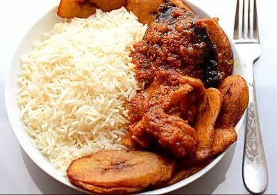

Suya
Suya is made with skewered beef, ram, or chicken. The thinly sliced meat is marinated in various spices and flavorings, and then barbecued.

Jollof Rice
Jollof or jollof rice, is a rice dish from West Africa. The dish is made with long-grain rice, tomatoes, onions, spices, vegetables and meat in a single pot
Efo Riro
Efo riro translates to mixed spinach and thats exactly what this soup is made of! Mix your soup with a variety of meats from our selection!

Rice and Stew
African beef stew is a traditional dish that is typically made with beef, tomatoes, Red bell peppers, onions, and a variety of spices such as ginger, garlic, and chili peppers
Meat Pie
The Nigerian meat pies are delicious pastries filled with minced meat, potato and carrots. These meat pies are popular in west Africa and Nigeria
Egusi
Egusi is a traditional one-pot soup that combines blended melon seed, pepper, leafy vegetables, and meat. It is nutty, spicy, and tasty.